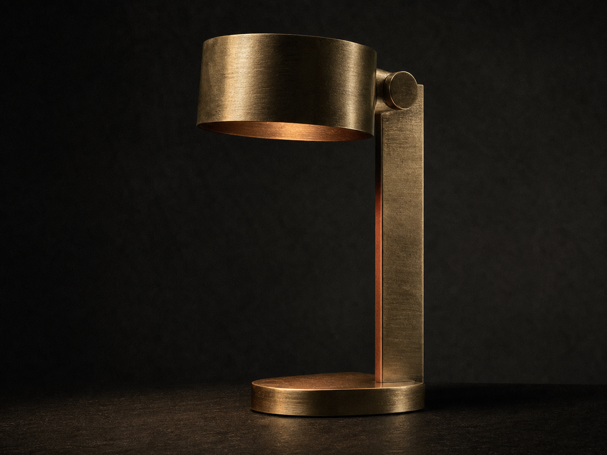
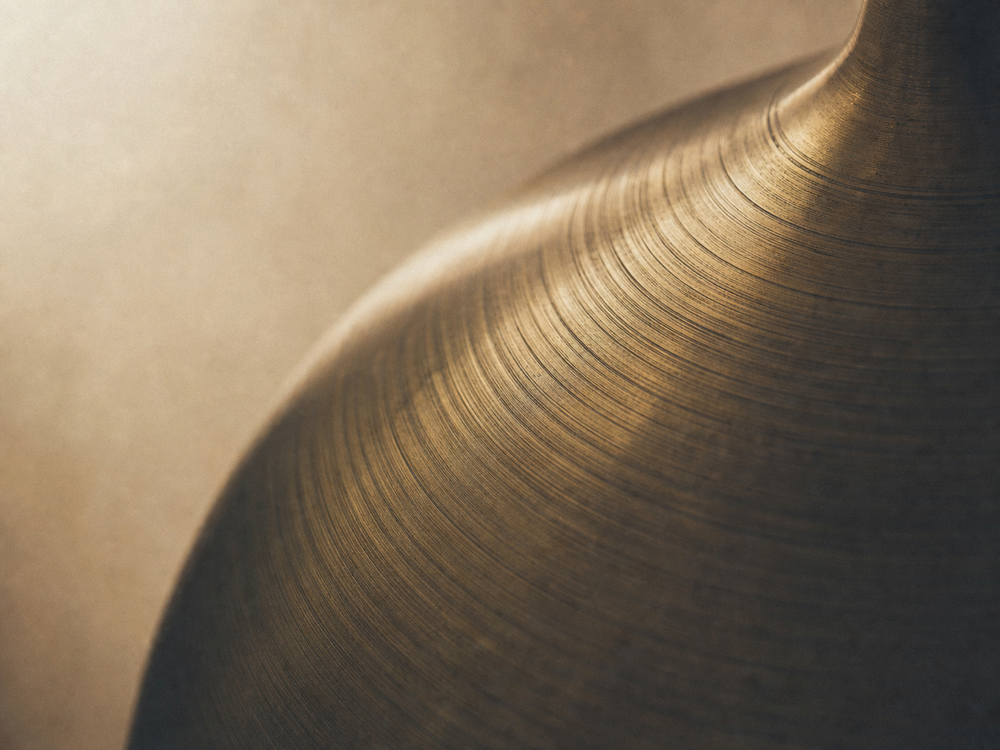
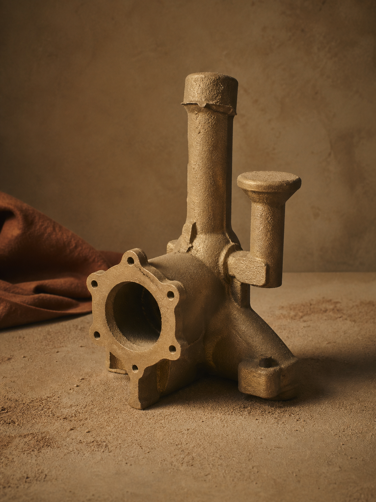
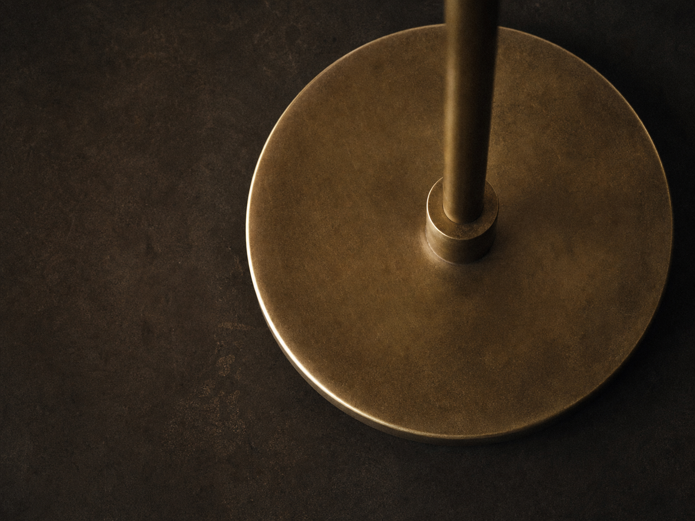
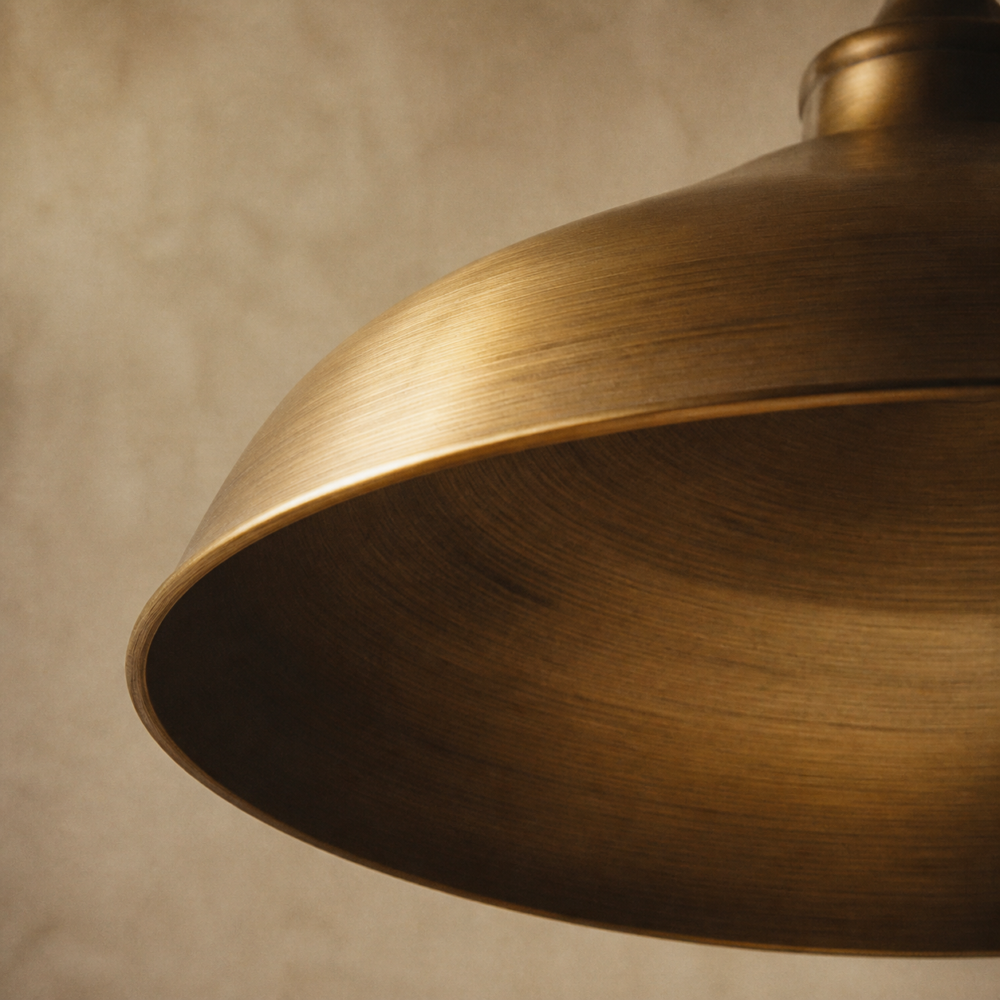
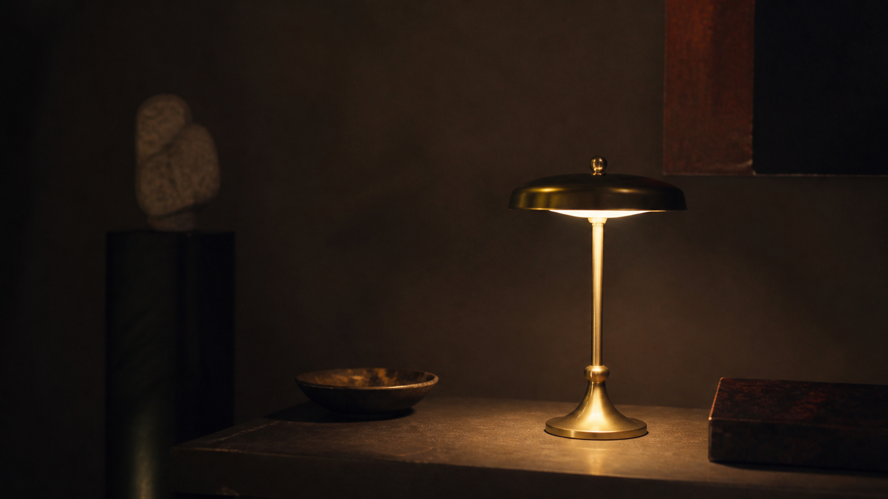

Solid cast brass. One object. Read the grain through every letter.
Latten
A single sculptural lamp, revealed only inside the wordmark, the material surfacing letter by letter.
Out from behind the letters, the whole object at last.
We make
one thing,
and we hide it
inside a word.
The foundry releases a single object. No catalogue, no variants, no seasonal line. One lamp, cast whole in solid brass, the same way each time, so the only thing left to design is how you are allowed to see it.
You meet it first as light caught in the counters of our own name. The metal lives behind the type; the type is the aperture. Commit, and the letters fall away, and the object stands in the open, heavier and quieter than the glimpse promised.


The object slides back behind the type, exposed counter by counter.
Form
Every stem of every letter frames a different inch of the same lamp: the lip of the shade, the swell of the base, the long draw of the arm. The word is the only window, and it never shows you the whole at once.
One specification.
There is nothing to configure. The object arrives as it is cast, struck and numbered on the base.
One lamp, four ways of looking.
See the whole object



One object. You have already seen all of it.